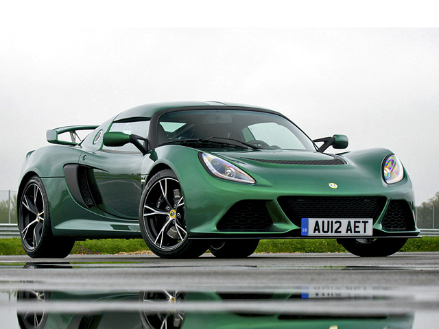

Нажмите на изображение, чтобы открыть в полном размере (новая вкладка)
Lotus Exige Cup 430 — самый мощный и ориентированный на трек дорожный Exige, выпускавшийся до 2021 года. Оснащён компрессорным двигателем V6, агрессивным аэродинамическим обвесом из карбона и регулируемой подвеской.
Exige Cup 430 — это чистый трековый инструмент, легальный на дорогах общего пользования. Аэродинамический пакет создаёт прижимную силу до 200 кг на высокой скорости. Двигатель объёмом 3.5 литра с нагнетателем выдает 430 л.с., что в сочетании с массой всего 1056 кг даёт феноменальное отношение мощности к весу. Регулируемые амортизаторы Nitron, углепластиковые детали интерьера и отсутствие лишних опций — всё для максимальной концентрации на вождении.